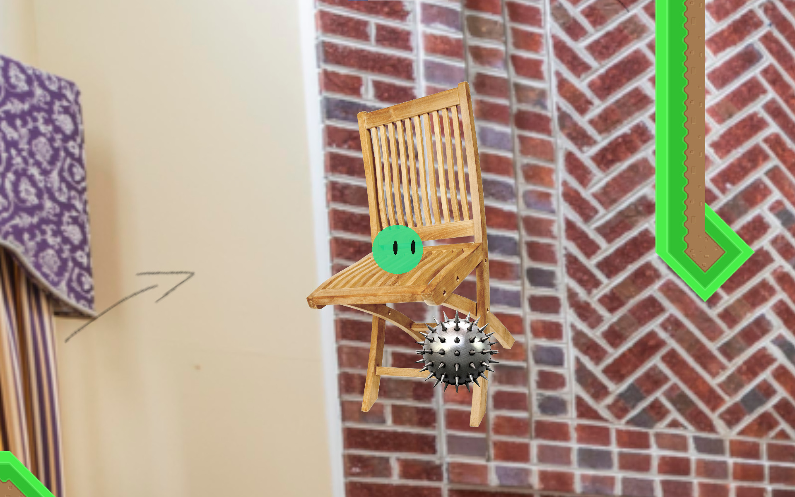

Objective: To design various objects for the first level of the game.
Outcome: I not only worked on designing the various stage hazards and platforms, but I also made the overall game feel realistic. My game was the winner in the game making contest in my C# class in USV.
Thanks to Kyle Dean and Nicholas Nguyen for creating this awesome game!